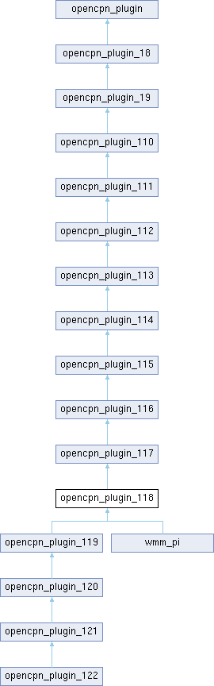

Public Member Functions | |
| opencpn_plugin_118 (void *pmgr) | |
| virtual bool | RenderGLOverlayMultiCanvas (wxGLContext *pcontext, PlugIn_ViewPort *vp, int canvasIndex, int priority) |
| Renders plugin overlay graphics in OpenGL mode with priority control. | |
| bool | RenderGLOverlayMultiCanvas (wxGLContext *pcontext, PlugIn_ViewPort *vp, int canvas_ix) override |
| Renders plugin overlay graphics in OpenGL mode for multi-canvas support. | |
| virtual bool | RenderOverlayMultiCanvas (wxDC &dc, PlugIn_ViewPort *vp, int canvas_ix, int priority) |
| Renders plugin overlay graphics in standard DC mode with priority control. | |
| bool | RenderOverlayMultiCanvas (wxDC &dc, PlugIn_ViewPort *vp, int canvas_ix) override |
| Renders plugin overlay graphics in standard DC mode for multi-canvas support. | |
| virtual bool | RenderGLOverlayMultiCanvas (wxGLContext *pcontext, PlugIn_ViewPort *vp, int canvasIndex) |
| Renders plugin overlay graphics in OpenGL mode for multi-canvas support. | |
| virtual bool | RenderOverlayMultiCanvas (wxDC &dc, PlugIn_ViewPort *vp, int canvasIndex) |
| Renders plugin overlay graphics in standard DC mode for multi-canvas support. | |
 Public Member Functions inherited from opencpn_plugin_117 Public Member Functions inherited from opencpn_plugin_117 | |
| opencpn_plugin_117 (void *pmgr) | |
| virtual int | GetPlugInVersionPatch () |
| Forms a semantic version together with GetPlugInVersionMajor() and GetPlugInVersionMinor(). | |
| virtual int | GetPlugInVersionPost () |
| Post-release version part, extends the semver spec. | |
| virtual const char * | GetPlugInVersionPre () |
| Pre-release tag version part, see GetPlugInVersionPatch() | |
| virtual const char * | GetPlugInVersionBuild () |
| Build version part see GetPlugInVersionPatch(). | |
| virtual void | SetActiveLegInfo (Plugin_Active_Leg_Info &leg_info) |
| Public Member Functions inherited from opencpn_plugin_116 | |
| opencpn_plugin_116 (void *pmgr) | |
| virtual void | PrepareContextMenu (int canvasIndex) |
| Prepares plugin context menu items. | |
| Public Member Functions inherited from opencpn_plugin_115 | |
| opencpn_plugin_115 (void *pmgr) | |
| Public Member Functions inherited from opencpn_plugin_114 | |
| opencpn_plugin_114 (void *pmgr) | |
| Public Member Functions inherited from opencpn_plugin_113 | |
| opencpn_plugin_113 (void *pmgr) | |
| virtual bool | KeyboardEventHook (wxKeyEvent &event) |
| Handles keyboard events from main window. | |
| virtual void | OnToolbarToolDownCallback (int id) |
| Handles toolbar button press. | |
| virtual void | OnToolbarToolUpCallback (int id) |
| Handles toolbar button release. | |
| Public Member Functions inherited from opencpn_plugin_112 | |
| opencpn_plugin_112 (void *pmgr) | |
| virtual bool | MouseEventHook (wxMouseEvent &event) |
| Handles mouse events from chart window. | |
| virtual void | SendVectorChartObjectInfo (wxString &chart, wxString &feature, wxString &objname, double lat, double lon, double scale, int nativescale) |
| Receives vector chart object information. | |
| Public Member Functions inherited from opencpn_plugin_111 | |
| opencpn_plugin_111 (void *pmgr) | |
| Public Member Functions inherited from opencpn_plugin_110 | |
| opencpn_plugin_110 (void *pmgr) | |
| virtual void | LateInit (void) |
| Public Member Functions inherited from opencpn_plugin_19 | |
| opencpn_plugin_19 (void *pmgr) | |
| virtual void | OnSetupOptions (void) |
| Allows plugin to add pages to global Options dialog. | |
| Public Member Functions inherited from opencpn_plugin_18 | |
| opencpn_plugin_18 (void *pmgr) | |
| virtual bool | RenderOverlay (wxDC &dc, PlugIn_ViewPort *vp) |
| virtual bool | RenderGLOverlay (wxGLContext *pcontext, PlugIn_ViewPort *vp) |
| Renders plugin overlay graphics in OpenGL mode for single canvas. | |
| virtual void | SetPluginMessage (wxString &message_id, wxString &message_body) |
| virtual void | SetPositionFixEx (PlugIn_Position_Fix_Ex &pfix) |
| Updates plugin with extended position fix data at regular intervals. | |
| virtual bool | RenderOverlay (wxMemoryDC *pmdc, PlugIn_ViewPort *vp) |
| Render plugin overlay graphics using standard device context. | |
| Public Member Functions inherited from opencpn_plugin | |
| opencpn_plugin (void *pmgr) | |
| virtual int | Init (void) |
| Initialize the plugin and declare its capabilities. | |
| virtual bool | DeInit (void) |
| Clean up plugin resources. | |
| virtual int | GetAPIVersionMajor () |
| Returns the major version number of the plugin API that this plugin supports. | |
| virtual int | GetAPIVersionMinor () |
| Returns the minor version number of the plugin API that this plugin supports. | |
| virtual int | GetPlugInVersionMajor () |
| Returns the major version number of the plugin itself. | |
| virtual int | GetPlugInVersionMinor () |
| Returns the minor version number of the plugin itself. | |
| virtual wxBitmap * | GetPlugInBitmap () |
| Get the plugin's icon bitmap. | |
| virtual wxString | GetCommonName () |
| Get the plugin's common (short) name. | |
| virtual wxString | GetShortDescription () |
| Get a brief description of the plugin. | |
| virtual wxString | GetLongDescription () |
| Get detailed plugin information. | |
| virtual void | SetDefaults (void) |
| Sets plugin default options. | |
| virtual int | GetToolbarToolCount (void) |
| Returns the number of toolbar tools this plugin provides. | |
| virtual int | GetToolboxPanelCount (void) |
| Returns the number of preference pages this plugin provides. | |
| virtual void | SetupToolboxPanel (int page_sel, wxNotebook *pnotebook) |
| Creates a plugin preferences page. | |
| virtual void | OnCloseToolboxPanel (int page_sel, int ok_apply_cancel) |
| Handles preference page closure. | |
| virtual void | ShowPreferencesDialog (wxWindow *parent) |
| Shows the plugin preferences dialog. | |
| virtual void | SetCursorLatLon (double lat, double lon) |
| Receives cursor lat/lon position updates. | |
| virtual void | SetCurrentViewPort (PlugIn_ViewPort &vp) |
| Notifies plugin of viewport changes. | |
| virtual void | SetPositionFix (PlugIn_Position_Fix &pfix) |
| Updates plugin with current position fix data at regular intervals. | |
| virtual void | SetNMEASentence (wxString &sentence) |
| Receive all NMEA 0183 sentences from OpenCPN. | |
| virtual void | SetAISSentence (wxString &sentence) |
| Receive all AIS sentences from OpenCPN. | |
| virtual void | ProcessParentResize (int x, int y) |
| Handles parent window resize events. | |
| virtual void | SetColorScheme (PI_ColorScheme cs) |
| Updates plugin color scheme. | |
| virtual void | OnToolbarToolCallback (int id) |
| Handles toolbar tool clicks. | |
| virtual void | OnContextMenuItemCallback (int id) |
| Handles context menu item selection. | |
| virtual void | UpdateAuiStatus (void) |
| Updates AUI manager status. | |
| virtual wxArrayString | GetDynamicChartClassNameArray (void) |
| Returns array of dynamically loaded chart class names. | |
Detailed Description
Definition at line 2121 of file ocpn_plugin.h.
Constructor & Destructor Documentation
◆ opencpn_plugin_118()
| opencpn_plugin_118::opencpn_plugin_118 | ( | void * | pmgr | ) |
Definition at line 275 of file ocpn_plugin.cpp.
Member Function Documentation
◆ RenderGLOverlayMultiCanvas() [1/3]
|
inlineoverridevirtual |
Renders plugin overlay graphics in OpenGL mode for multi-canvas support.
Legacy version of RenderGLOverlayMultiCanvas without priority control. This method is called for backward compatibility with plugins that haven't upgraded to the priority-aware API. The overlay is rendered at OVERLAY_LEGACY priority level (0), appearing behind ships and other high-priority elements.
- Parameters
-
pcontext OpenGL context for drawing operations vp Current viewport parameters including position, scale, rotation canvasIndex Index of the target canvas (0-based)
- Returns
- True if overlay was rendered, False otherwise
- Note
- Only called if plugin declares WANTS_OPENGL_OVERLAY_CALLBACK capability
- Modern plugins should use the priority-aware version instead
- Renders at OVERLAY_LEGACY priority level automatically
- Drawing should respect current viewport parameters
- For new plugins, prefer RenderGLOverlayMultiCanvas() with priority parameter
- Deprecated:
- Use RenderGLOverlayMultiCanvas(wxGLContext*, PlugIn_ViewPort*, int, int) for priority control
- See also
- RenderGLOverlayMultiCanvas() with priority parameter
- RenderGLOverlay() for single-canvas legacy rendering
- OVERLAY_LEGACY
- Since
- API v1.16
Reimplemented from opencpn_plugin_116.
Definition at line 2194 of file ocpn_plugin.h.
◆ RenderGLOverlayMultiCanvas() [2/3]
|
virtual |
Renders plugin overlay graphics in OpenGL mode for multi-canvas support.
Legacy version of RenderGLOverlayMultiCanvas without priority control. This method is called for backward compatibility with plugins that haven't upgraded to the priority-aware API. The overlay is rendered at OVERLAY_LEGACY priority level (0), appearing behind ships and other high-priority elements.
- Parameters
-
pcontext OpenGL context for drawing operations vp Current viewport parameters including position, scale, rotation canvasIndex Index of the target canvas (0-based)
- Returns
- True if overlay was rendered, False otherwise
- Note
- Only called if plugin declares WANTS_OPENGL_OVERLAY_CALLBACK capability
- Modern plugins should use the priority-aware version instead
- Renders at OVERLAY_LEGACY priority level automatically
- Drawing should respect current viewport parameters
- For new plugins, prefer RenderGLOverlayMultiCanvas() with priority parameter
- Deprecated:
- Use RenderGLOverlayMultiCanvas(wxGLContext*, PlugIn_ViewPort*, int, int) for priority control
- See also
- RenderGLOverlayMultiCanvas() with priority parameter
- RenderGLOverlay() for single-canvas legacy rendering
- OVERLAY_LEGACY
- Since
- API v1.16
Reimplemented from opencpn_plugin_116.
Definition at line 2049 of file ocpn_plugin.cpp.
◆ RenderGLOverlayMultiCanvas() [3/3]
|
virtual |
Renders plugin overlay graphics in OpenGL mode with priority control.
This is the recommended method for OpenGL overlay rendering in modern plugins. It provides precise control over rendering order through priority levels and supports multi-canvas configurations. OpenCPN calls this method multiple times with different priority values to build up the complete overlay stack.
The plugin should examine the priority parameter and only render overlays appropriate for that layer. This ensures proper visual ordering where background data appears behind ships, which appear behind critical alerts.
For plugins upgrading from older APIs, rendering should typically occur only when priority equals OVERLAY_LEGACY (0) to maintain compatibility with existing behavior.
- Parameters
-
pcontext OpenGL context for drawing operations - use for direct OpenGL commands or OpenCPN's piDC abstraction layer vp Current viewport parameters including: - Center position (clat, clon)
- Scale (view_scale_ppm)
- Rotation and skew
- Canvas dimensions (pix_width, pix_height)
- Visible area bounds (lat_min/max, lon_min/max)
canvasIndex Index of the target canvas (0-based). In multi-canvas configurations (split screen), each canvas may have different viewport parameters priority Rendering priority level determining overlay layering: - OVERLAY_LEGACY (0): Background data, most common usage
- OVERLAY_OVER_SHIPS (64): Above vessel symbols
- OVERLAY_OVER_EMBOSS (96): Above chart relief
- OVERLAY_OVER_UI (128): Above all UI elements (use sparingly)
- Returns
- True if overlay was rendered for this priority level, False if no rendering occurred (normal when priority doesn't match plugin's needs)
- Note
- Only called if plugin declares WANTS_OPENGL_OVERLAY_CALLBACK capability
- Drawing coordinates should be calculated relative to the viewport parameters
- Performance critical - keep rendering optimized for smooth chart updates
- Plugin should check priority parameter to render only appropriate overlays
- For plugins supporting multiple priority levels, maintain separate rendering paths for each priority to avoid duplicate drawing
- See also
- RenderOverlayMultiCanvas() for standard DC rendering
- RenderGLOverlay() for legacy single-canvas OpenGL rendering
- OVERLAY_LEGACY, OVERLAY_OVER_SHIPS, OVERLAY_OVER_EMBOSS, OVERLAY_OVER_UI
- Since
- API v1.18
Definition at line 277 of file ocpn_plugin.cpp.
◆ RenderOverlayMultiCanvas() [1/3]
|
inlineoverridevirtual |
Renders plugin overlay graphics in standard DC mode for multi-canvas support.
Legacy version of RenderOverlayMultiCanvas without priority control. This method is called for backward compatibility with plugins that haven't upgraded to the priority-aware API. The overlay is rendered at OVERLAY_LEGACY priority level (0), appearing behind ships and other high-priority elements.
- Parameters
-
dc Device context for drawing operations vp Current viewport parameters including position, scale, rotation canvasIndex Index of the target canvas (0-based)
- Returns
- True if overlay was rendered, False otherwise
- Note
- Only called if plugin declares WANTS_OVERLAY_CALLBACK capability
- Modern plugins should use the priority-aware version instead
- Renders at OVERLAY_LEGACY priority level automatically
- Use GetCanvasPixLL() to convert lat/lon coordinates to screen pixels
- For new plugins, prefer RenderOverlayMultiCanvas() with priority parameter
- Deprecated:
- Use RenderOverlayMultiCanvas(wxDC&, PlugIn_ViewPort*, int, int) for priority control
- See also
- RenderOverlayMultiCanvas() with priority parameter
- RenderOverlay() for single-canvas legacy rendering
- OVERLAY_LEGACY
- Since
- API v1.16
Reimplemented from opencpn_plugin_116.
Definition at line 2261 of file ocpn_plugin.h.
◆ RenderOverlayMultiCanvas() [2/3]
|
virtual |
Renders plugin overlay graphics in standard DC mode with priority control.
This is the recommended method for standard (non-OpenGL) overlay rendering in modern plugins. It provides precise control over rendering order through priority levels and supports multi-canvas configurations. OpenCPN calls this method multiple times with different priority values to build up the complete overlay stack.
The plugin should examine the priority parameter and only render overlays appropriate for that layer. This ensures proper visual ordering where background data appears behind ships, which appear behind critical alerts.
For plugins upgrading from older APIs, rendering should typically occur only when priority equals OVERLAY_LEGACY (0) to maintain compatibility with existing behavior.
- Parameters
-
dc Device context for drawing operations - supports standard wxWidgets drawing methods like DrawLine(), DrawCircle(), DrawText(), etc. vp Current viewport parameters including: - Center position (clat, clon)
- Scale (view_scale_ppm)
- Rotation and skew
- Canvas dimensions (pix_width, pix_height)
- Visible area bounds (lat_min/max, lon_min/max)
canvasIndex Index of the target canvas (0-based). In multi-canvas configurations (split screen), each canvas may have different viewport parameters priority Rendering priority level determining overlay layering: - OVERLAY_LEGACY (0): Background data, most common usage
- OVERLAY_OVER_SHIPS (64): Above vessel symbols
- OVERLAY_OVER_EMBOSS (96): Above chart relief
- OVERLAY_OVER_UI (128): Above all UI elements (use sparingly)
- Returns
- True if overlay was rendered for this priority level, False if no rendering occurred (normal when priority doesn't match plugin's needs)
- Note
- Only called if plugin declares WANTS_OVERLAY_CALLBACK capability
- Drawing coordinates should be calculated relative to the viewport parameters
- Use GetCanvasPixLL() to convert lat/lon coordinates to screen pixels
- Plugin should check priority parameter to render only appropriate overlays
- For plugins supporting multiple priority levels, maintain separate rendering paths for each priority to avoid duplicate drawing
- See also
- RenderGLOverlayMultiCanvas() for OpenGL rendering
- RenderOverlay() for legacy single-canvas DC rendering
- OVERLAY_LEGACY, OVERLAY_OVER_SHIPS, OVERLAY_OVER_EMBOSS, OVERLAY_OVER_UI
- Since
- API v1.18
Definition at line 284 of file ocpn_plugin.cpp.
◆ RenderOverlayMultiCanvas() [3/3]
|
virtual |
Renders plugin overlay graphics in standard DC mode for multi-canvas support.
Legacy version of RenderOverlayMultiCanvas without priority control. This method is called for backward compatibility with plugins that haven't upgraded to the priority-aware API. The overlay is rendered at OVERLAY_LEGACY priority level (0), appearing behind ships and other high-priority elements.
- Parameters
-
dc Device context for drawing operations vp Current viewport parameters including position, scale, rotation canvasIndex Index of the target canvas (0-based)
- Returns
- True if overlay was rendered, False otherwise
- Note
- Only called if plugin declares WANTS_OVERLAY_CALLBACK capability
- Modern plugins should use the priority-aware version instead
- Renders at OVERLAY_LEGACY priority level automatically
- Use GetCanvasPixLL() to convert lat/lon coordinates to screen pixels
- For new plugins, prefer RenderOverlayMultiCanvas() with priority parameter
- Deprecated:
- Use RenderOverlayMultiCanvas(wxDC&, PlugIn_ViewPort*, int, int) for priority control
- See also
- RenderOverlayMultiCanvas() with priority parameter
- RenderOverlay() for single-canvas legacy rendering
- OVERLAY_LEGACY
- Since
- API v1.16
Reimplemented from opencpn_plugin_116.
Definition at line 2084 of file ocpn_plugin.cpp.
The documentation for this class was generated from the following files:
- /home/runner/work/OpenCPN/OpenCPN/include/ocpn_plugin.h
- /home/runner/work/OpenCPN/OpenCPN/model/src/ocpn_plugin.cpp